Night windows
| Night | Astro dusk | Astro dawn | Length | Elapsed | km (cutoff pace) |
|---|---|---|---|---|---|
| 1 | Fri 18 Sep 19:19 | Sat 19 Sep 04:37 | 9h 18m | 11h 20m–20h 37m | 36–66 |
| 2 | Sat 19 Sep 19:18 | Sun 20 Sep 04:37 | 9h 19m | 35h 19m–44h 38m | 116–144 |
Twilight (context)
| Event | Local time | Elapsed |
|---|---|---|
| sunset | Fri 18 Sep 18:04 | 10h 05m |
| civil dusk | Fri 18 Sep 18:27 | 10h 27m |
| nautical dusk | Fri 18 Sep 18:53 | 10h 53m |
| astronomical dusk | Fri 18 Sep 19:19 | 11h 20m |
| astronomical dawn | Sat 19 Sep 04:37 | 20h 37m |
| nautical dawn | Sat 19 Sep 05:03 | 21h 04m |
| civil dawn | Sat 19 Sep 05:29 | 21h 30m |
| sunrise | Sat 19 Sep 05:52 | 21h 52m |
| sunset | Sat 19 Sep 18:03 | 34h 04m |
| civil dusk | Sat 19 Sep 18:26 | 34h 26m |
| nautical dusk | Sat 19 Sep 18:52 | 34h 52m |
| astronomical dusk | Sat 19 Sep 19:18 | 35h 19m |
| astronomical dawn | Sun 20 Sep 04:37 | 44h 38m |
| nautical dawn | Sun 20 Sep 05:04 | 45h 04m |
| civil dawn | Sun 20 Sep 05:30 | 45h 30m |
| sunrise | Sun 20 Sep 05:52 | 45h 52m |


Night 1
Fri 18 Sep 19:19 → Sat 19 Sep 04:37 (elapsed 11h 20m–20h 37m, km 36–66 at cutoff pace).
Moon first quarter, 49% lit, below the terrain horizon. Milky Way centre is below the local horizon. Overhead: Andromeda, Aries, Pegasus.


Fri 18 Sep 19:19 · elapsed 11h 20m · km 36.1 · 969 m
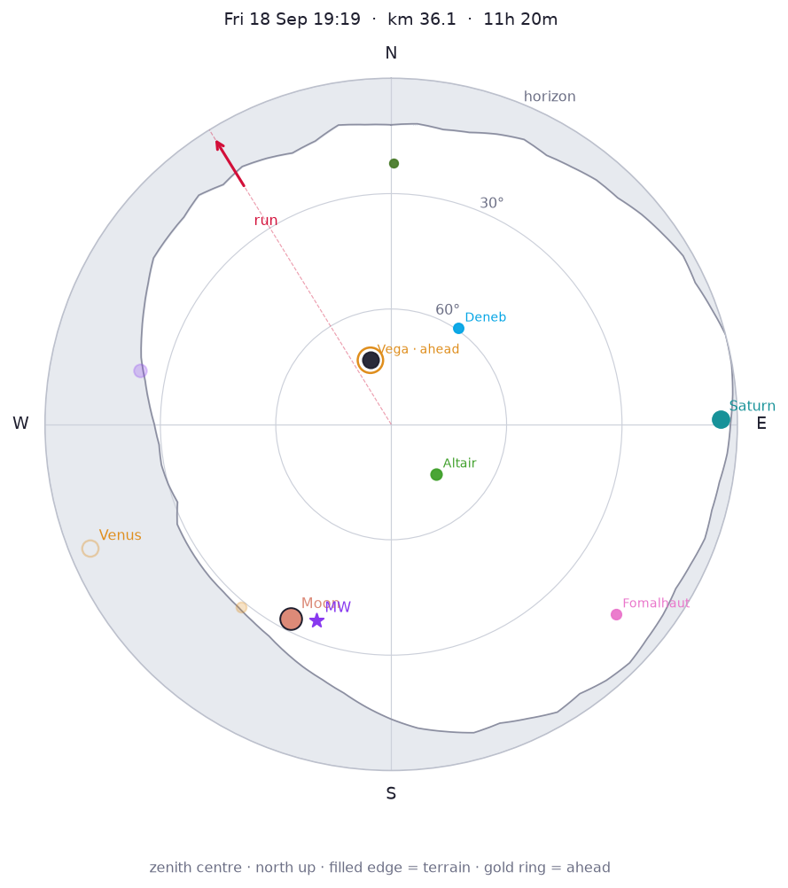
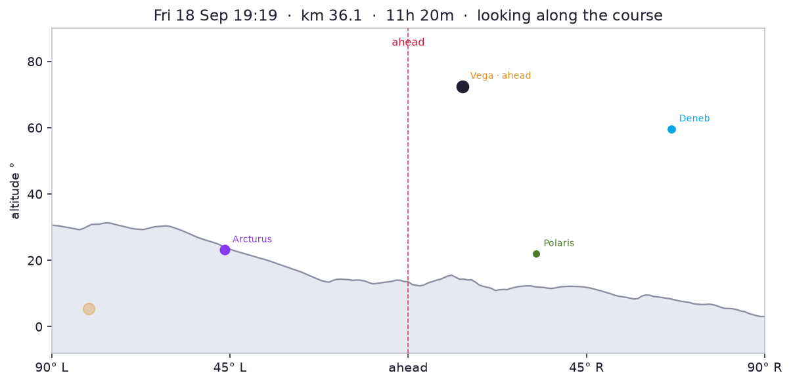
Moon first quarter, 47% lit, 33° SW (207°).
Milky Way centre 35° S (201°).
Planets
- Venus: 5° W (248°), mag -4.8 — behind terrain
- Saturn: 4° E (89°), mag 0.4
Constellations
- Overhead: Aquila, Cygnus, Lyra, Ophiuchus
- Up: Aquarius, Capricornus, Cassiopeia, Cepheus, Corona Borealis, Draco, Pegasus, Sagittarius, Scorpius, Serpens
- Rising: Andromeda, Grus, Piscis Austrinus, Ursa Minor
- Setting: Ursa Major
Bright stars
- Vega (Lyra): 72° N (342°), mag 0.0
- Altair (Aquila): 73° SE (138°), mag 0.8
- Fomalhaut (Piscis Austrinus): 14° SE (130°), mag 1.2
- Deneb (Cygnus): 60° NE (35°), mag 1.2
- Polaris (Ursa Minor): 22° N (1°), mag 2.0
Fri 18 Sep 19:53 · elapsed 11h 53m · km 38.0 · 907 m


Moon first quarter, 47% lit, 29° SW (215°).
Milky Way centre 32° SW (209°).
Planets
- Saturn: 12° E (92°), mag 0.4
Constellations
- Overhead: Aquila, Cygnus, Lyra
- Up: Andromeda, Aquarius, Capricornus, Cassiopeia, Cepheus, Corona Borealis, Draco, Ophiuchus, Pegasus, Sagittarius, Serpens
- Rising: Grus, Pavo, Piscis Austrinus
- Setting: Scorpius
Bright stars
- Vega (Lyra): 69° NW (325°), mag 0.0
- Altair (Aquila): 76° S (166°), mag 0.8
- Antares (Scorpius): 23° SW (225°), mag 1.0
- Fomalhaut (Piscis Austrinus): 19° SE (135°), mag 1.2
- Deneb (Cygnus): 64° NE (25°), mag 1.2
Fri 18 Sep 21:08 · elapsed 13h 08m · km 42.0 · 957 m


Moon first quarter, 48% lit, 18° SW (227°).
Milky Way centre 22° SW (223°).
Planets
- Saturn: 29° E (100°), mag 0.4
Constellations
- Overhead: Aquarius, Aquila, Cygnus, Pegasus
- Up: Andromeda, Capricornus, Cassiopeia, Cepheus, Draco, Lyra, Ophiuchus, Piscis Austrinus, Sagittarius
- Rising: Aries, Cetus, Grus, Perseus, Phoenix, Pisces, Ursa Minor
- Setting: Pavo, Scorpius
Bright stars
- Vega (Lyra): 57° NW (308°), mag 0.0
- Altair (Aquila): 70° SW (231°), mag 0.8
- Fomalhaut (Piscis Austrinus): 30° SE (149°), mag 1.2
- Deneb (Cygnus): 67° N (355°), mag 1.2
- Polaris (Ursa Minor): 22° N (1°), mag 2.0
Fri 18 Sep 21:45 · elapsed 13h 46m · km 44.0 · 961 m
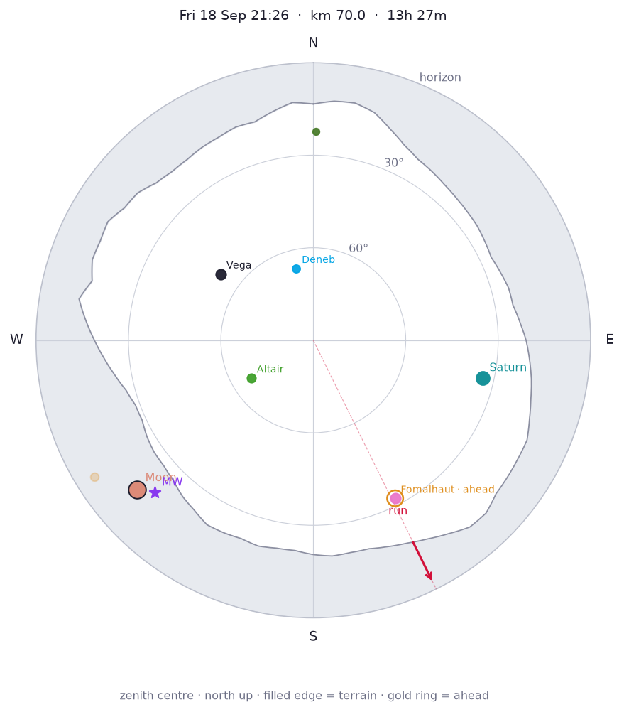
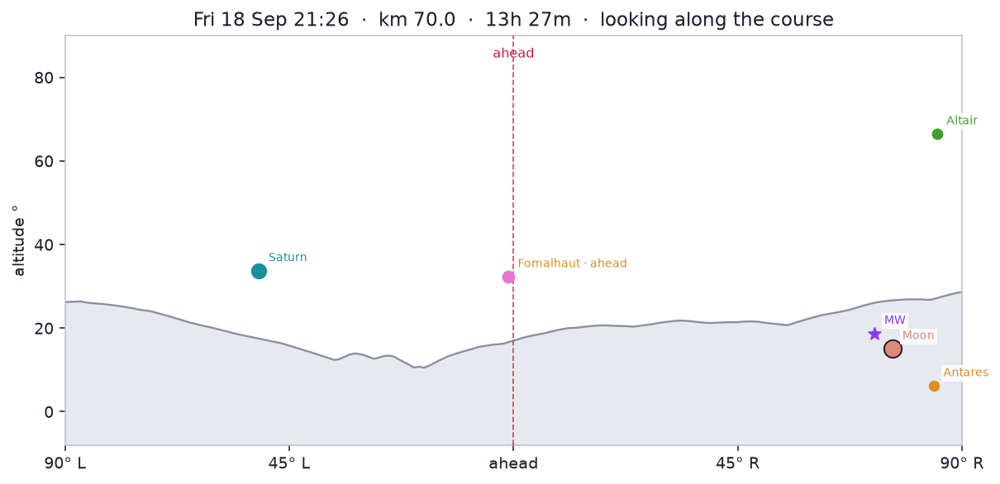
Moon first quarter, 48% lit, below the terrain horizon.
Milky Way centre is below the local horizon.
Planets
- Saturn: 38° E (105°), mag 0.4
Constellations
- Overhead: Aquarius, Aquila, Cygnus, Pegasus
- Up: Andromeda, Aries, Capricornus, Cassiopeia, Cepheus, Cetus, Draco, Lyra, Ophiuchus, Piscis Austrinus, Sagittarius
- Rising: Grus, Phoenix, Pisces
Bright stars
- Vega (Lyra): 50° NW (304°), mag 0.0
- Altair (Aquila): 63° SW (245°), mag 0.8
- Fomalhaut (Piscis Austrinus): 34° SE (157°), mag 1.2
- Deneb (Cygnus): 65° N (339°), mag 1.2
Fri 18 Sep 22:23 · elapsed 14h 24m · km 46.0 · 821 m
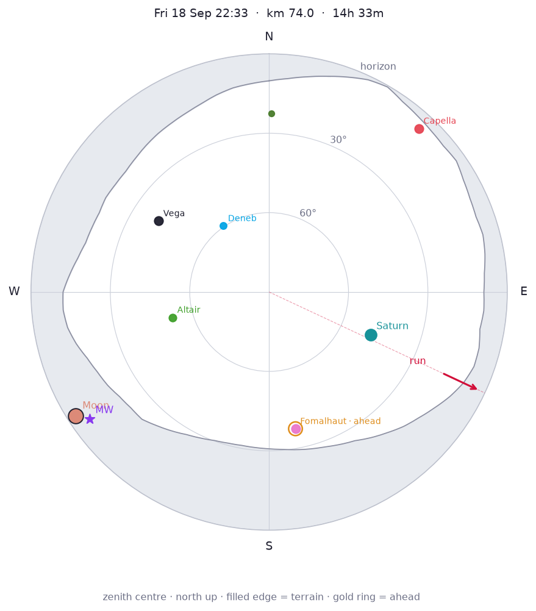
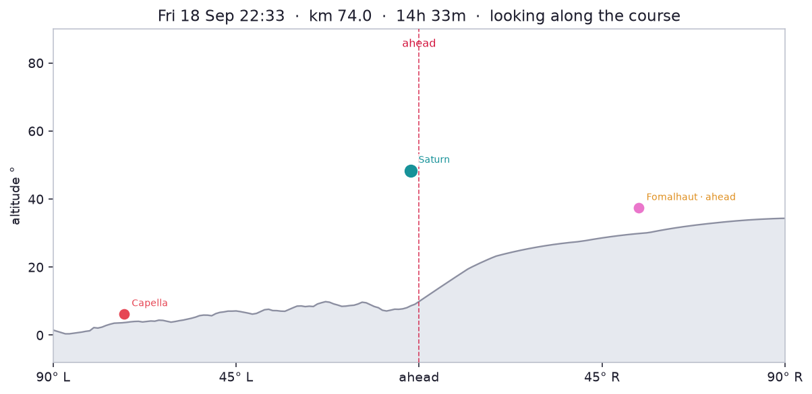
Moon first quarter, 48% lit, below the terrain horizon.
Milky Way centre is below the local horizon.
Planets
- Saturn: 46° E (111°), mag 0.4
Constellations
- Overhead: Andromeda, Aquarius, Cygnus, Pegasus
- Up: Aquila, Aries, Capricornus, Cassiopeia, Cepheus, Cetus, Draco, Lyra, Perseus, Pisces, Piscis Austrinus
- Rising: Grus, Phoenix, Ursa Minor
- Setting: Ophiuchus, Sagittarius
Bright stars
- Vega (Lyra): 42° NW (303°), mag 0.0
- Altair (Aquila): 54° W (254°), mag 0.8
- Fomalhaut (Piscis Austrinus): 37° S (167°), mag 1.2
- Deneb (Cygnus): 61° NW (328°), mag 1.2
- Polaris (Ursa Minor): 22° N (1°), mag 2.0
Fri 18 Sep 23:38 · elapsed 15h 39m · km 50.0 · 962 m
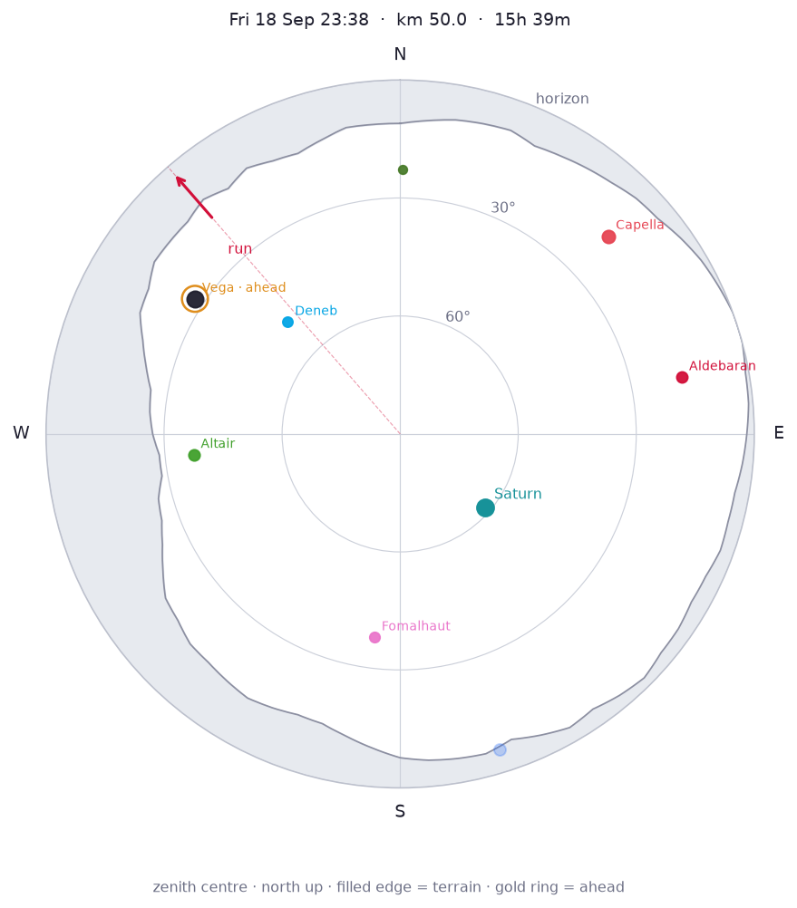
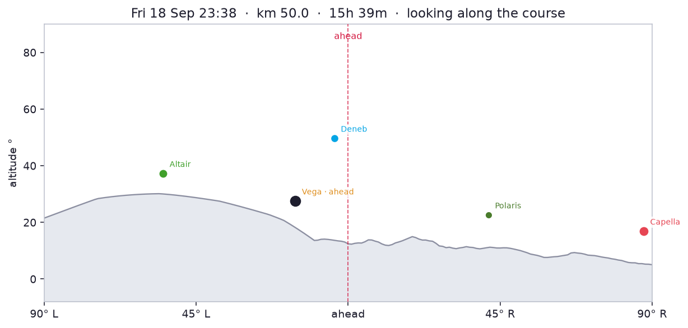
Moon first quarter, 49% lit, below the terrain horizon.
Milky Way centre is below the local horizon.
Planets
- Saturn: 61° SE (131°), mag 0.4
Constellations
- Overhead: Andromeda, Pegasus
- Up: Aquarius, Aquila, Aries, Capricornus, Cassiopeia, Cepheus, Cetus, Cygnus, Lyra, Perseus, Pisces, Piscis Austrinus
- Rising: Auriga, Phoenix, Taurus, Ursa Minor
- Setting: Draco, Grus
Bright stars
- Vega (Lyra): 28° NW (303°), mag 0.0
- Capella (Auriga): 17° NE (47°), mag 0.1
- Altair (Aquila): 37° W (264°), mag 0.8
- Aldebaran (Taurus): 17° E (79°), mag 0.8
- Fomalhaut (Piscis Austrinus): 38° S (187°), mag 1.2
- Deneb (Cygnus): 50° NW (315°), mag 1.2
- Polaris (Ursa Minor): 23° N (1°), mag 2.0
Sat 19 Sep 00:16 · elapsed 16h 16m · km 52.0 · 937 m

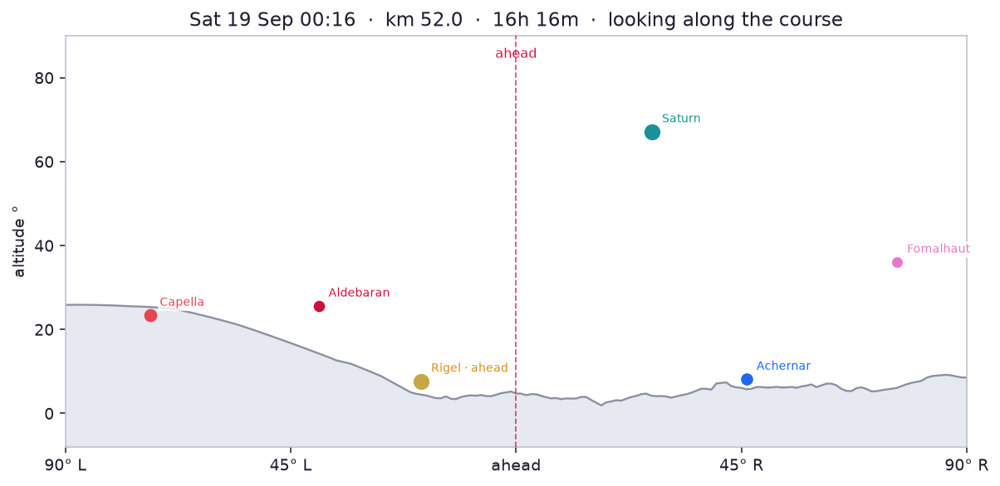
Moon first quarter, 49% lit, below the terrain horizon.
Milky Way centre is below the local horizon.
Planets
- Saturn: 67° SE (148°), mag 0.4
Constellations
- Overhead: Andromeda, Aries, Pegasus
- Up: Aquarius, Aquila, Capricornus, Cassiopeia, Cepheus, Cetus, Cygnus, Perseus, Phoenix, Pisces, Piscis Austrinus, Taurus
- Rising: Eridanus, Orion, Ursa Minor
- Setting: Draco, Grus, Lyra
Bright stars
- Vega (Lyra): 20° NW (305°), mag 0.0
- Rigel (Orion): 8° E (102°), mag 0.1
- Achernar (Eridanus): 8° S (167°), mag 0.5
- Altair (Aquila): 29° W (268°), mag 0.8
- Aldebaran (Taurus): 26° E (82°), mag 0.8
- Fomalhaut (Piscis Austrinus): 36° S (197°), mag 1.2
- Deneb (Cygnus): 43° NW (312°), mag 1.2
- Polaris (Ursa Minor): 23° N (0°), mag 2.0
Sat 19 Sep 01:31 · elapsed 17h 32m · km 56.0 · 581 m
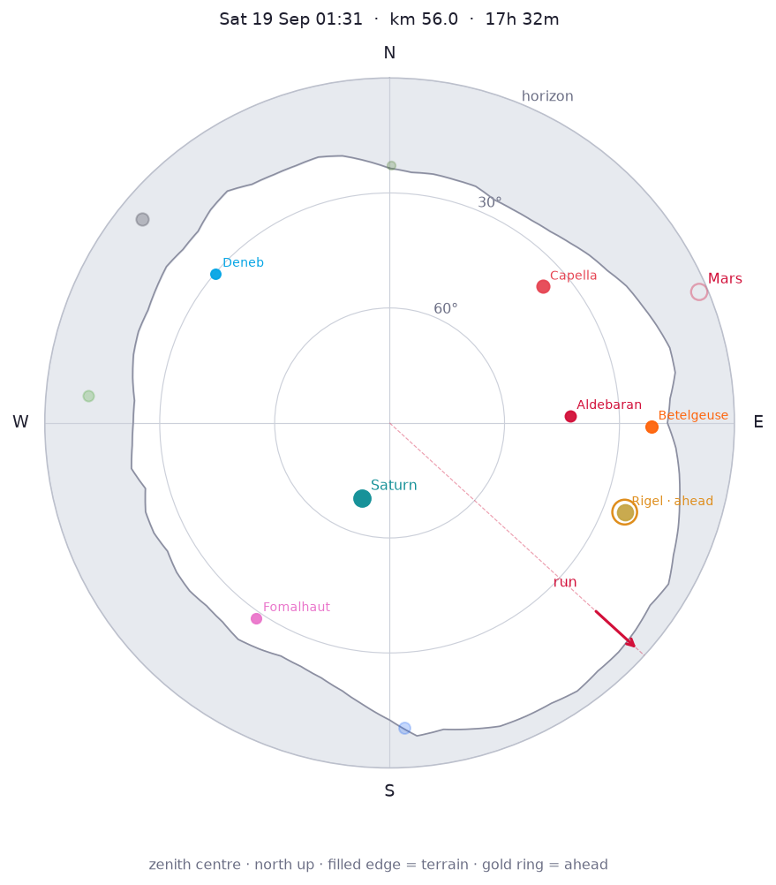
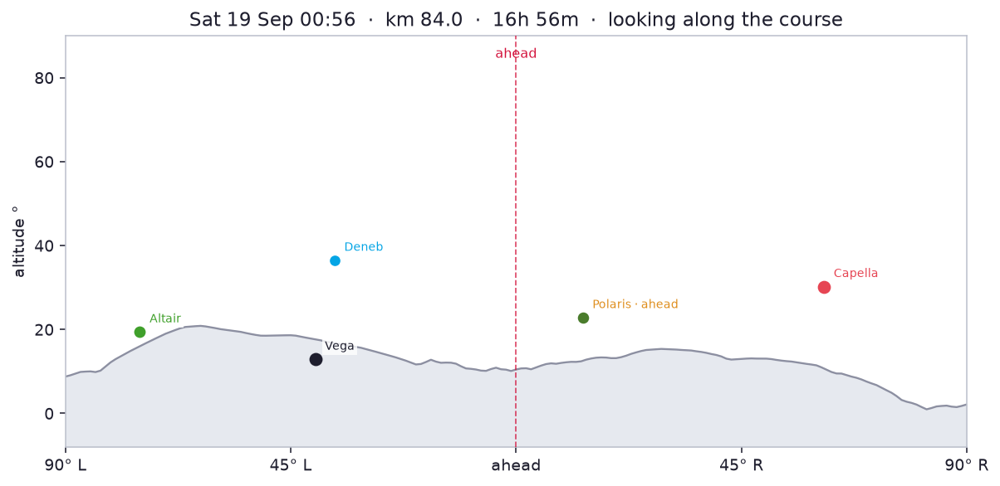
Moon first quarter, 49% lit, below the terrain horizon.
Milky Way centre is below the local horizon.
Planets
- Mars: 2° NE (67°), mag 1.2 — behind terrain
- Saturn: 69° S (200°), mag 0.4
Constellations
- Overhead: Andromeda, Aries, Pegasus, Pisces
- Up: Aquarius, Auriga, Capricornus, Cassiopeia, Cepheus, Cetus, Cygnus, Orion, Perseus, Piscis Austrinus, Taurus
- Rising: Lepus
- Setting: Phoenix
Bright stars
- Capella (Auriga): 36° NE (48°), mag 0.1
- Rigel (Orion): 24° E (111°), mag 0.1
- Betelgeuse (Orion): 22° E (91°), mag 0.4
- Aldebaran (Taurus): 43° E (88°), mag 0.8
- Fomalhaut (Piscis Austrinus): 28° SW (214°), mag 1.2
- Deneb (Cygnus): 30° NW (311°), mag 1.2
Sat 19 Sep 02:09 · elapsed 18h 09m · km 58.0 · 598 m
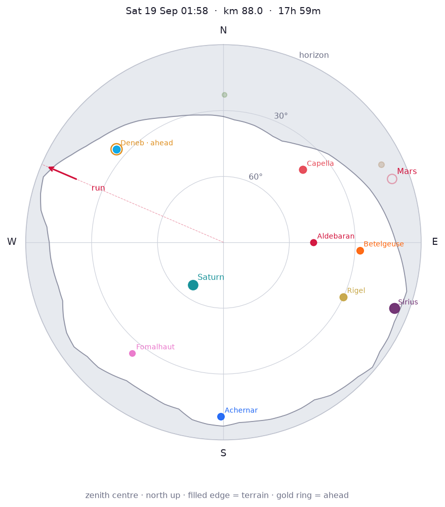
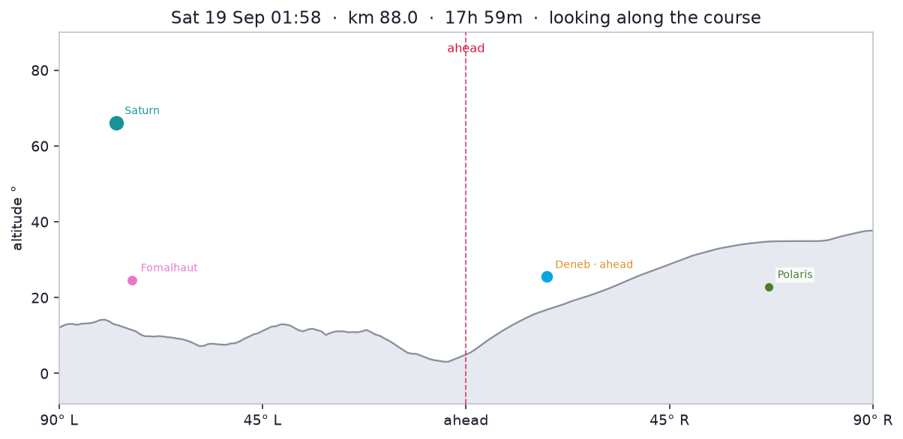
Moon first quarter, 50% lit, below the terrain horizon.
Milky Way centre is below the local horizon.
Planets
- Mars: 10° E (70°), mag 1.2
- Saturn: 65° SW (221°), mag 0.4
Constellations
- Overhead: Andromeda, Aries, Cetus, Pegasus, Perseus, Pisces
- Up: Auriga, Cassiopeia, Cepheus, Orion, Taurus
- Rising: Columba, Gemini, Lepus, Ursa Minor
- Setting: Aquarius, Capricornus, Cygnus, Eridanus, Phoenix, Piscis Austrinus
Bright stars
- Capella (Auriga): 43° NE (47°), mag 0.1
- Rigel (Orion): 32° SE (116°), mag 0.1
- Betelgeuse (Orion): 30° E (95°), mag 0.4
- Achernar (Eridanus): 11° S (182°), mag 0.5
- Aldebaran (Taurus): 52° E (91°), mag 0.8
- Pollux (Gemini): 12° NE (65°), mag 1.1
- Fomalhaut (Piscis Austrinus): 23° SW (221°), mag 1.2
- Deneb (Cygnus): 24° NW (311°), mag 1.2
- Polaris (Ursa Minor): 23° N (0°), mag 2.0
Sat 19 Sep 02:46 · elapsed 18h 47m · km 60.0 · 838 m
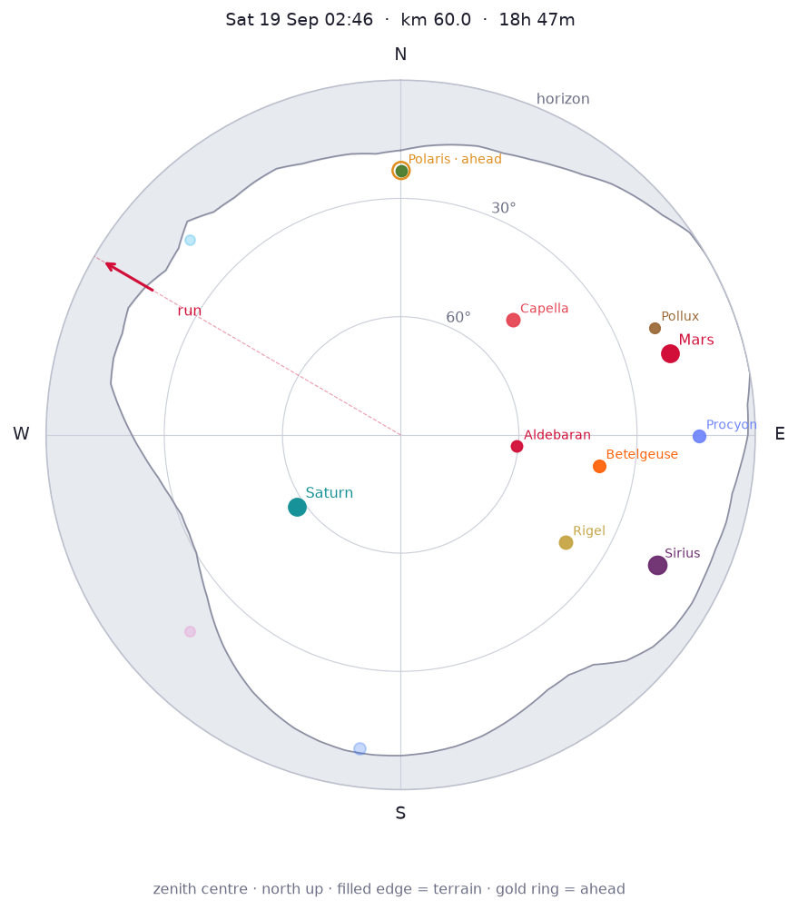
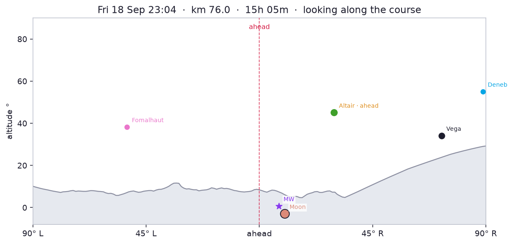
Moon first quarter, 50% lit, below the terrain horizon.
Milky Way centre is below the local horizon.
Planets
- Mars: 19° E (73°), mag 1.2
- Saturn: 58° SW (235°), mag 0.4
Constellations
- Overhead: Aries, Cetus, Perseus, Pisces, Taurus
- Up: Andromeda, Auriga, Cassiopeia, Lepus, Orion, Pegasus
- Rising: Canis Major, Canis Minor, Columba, Gemini, Ursa Minor
- Setting: Cepheus, Phoenix
Bright stars
- Sirius (Canis Major): 17° SE (117°), mag -1.5
- Capella (Auriga): 49° NE (44°), mag 0.1
- Rigel (Orion): 40° SE (123°), mag 0.1
- Procyon (Canis Minor): 14° E (90°), mag 0.3
- Betelgeuse (Orion): 39° E (99°), mag 0.4
- Aldebaran (Taurus): 60° E (96°), mag 0.8
- Pollux (Gemini): 20° NE (67°), mag 1.1
- Polaris (Ursa Minor): 23° N (0°), mag 2.0
Sat 19 Sep 04:02 · elapsed 20h 02m · km 64.0 · 653 m
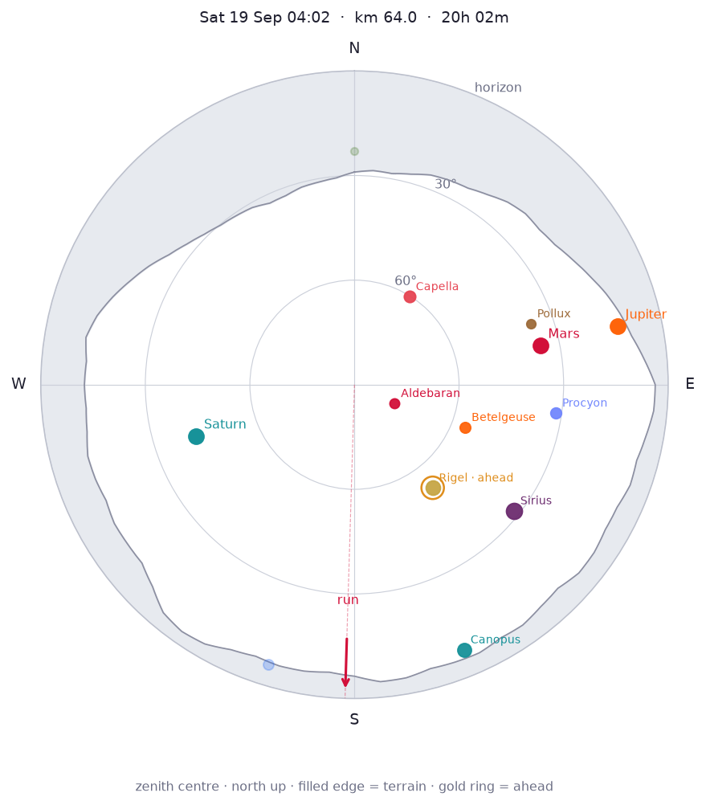
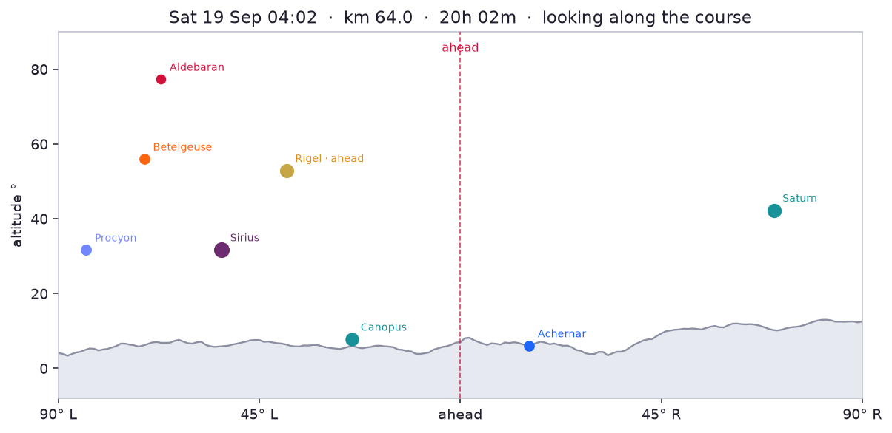
Moon first quarter, 50% lit, below the terrain horizon.
Milky Way centre is below the local horizon.
Planets
- Mars: 36° E (78°), mag 1.2
- Jupiter: 13° E (78°), mag -1.8
- Saturn: 42° W (252°), mag 0.4
Constellations
- Overhead: Aries, Auriga, Cetus, Orion, Perseus, Taurus
- Up: Andromeda, Canis Major, Canis Minor, Cassiopeia, Columba, Gemini, Lepus, Pegasus, Pisces
- Rising: Carina
- Setting: Phoenix
Bright stars
- Sirius (Canis Major): 32° SE (128°), mag -1.5
- Canopus (Carina): 8° SE (157°), mag -0.7
- Capella (Auriga): 60° NE (32°), mag 0.1
- Rigel (Orion): 53° SE (143°), mag 0.1
- Procyon (Canis Minor): 32° E (98°), mag 0.3
- Betelgeuse (Orion): 56° E (111°), mag 0.4
- Aldebaran (Taurus): 77° SE (115°), mag 0.8
- Pollux (Gemini): 36° E (71°), mag 1.1
Sat 19 Sep 04:37 · elapsed 20h 37m · km 65.9 · 416 m

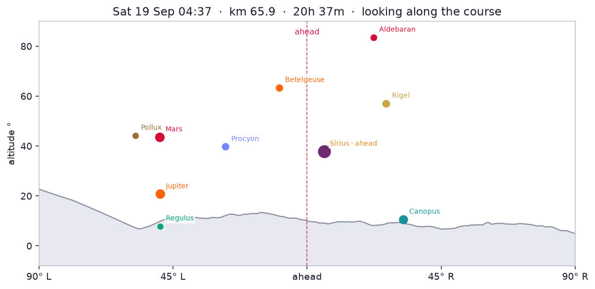
Moon first quarter, 50% lit, below the terrain horizon.
Milky Way centre is below the local horizon.
Planets
- Mars: 44° E (80°), mag 1.2
- Jupiter: 21° E (80°), mag -1.8
- Saturn: 34° W (257°), mag 0.4
Constellations
- Overhead: Auriga, Cetus, Orion, Perseus, Taurus
- Up: Andromeda, Aries, Canis Major, Canis Minor, Cassiopeia, Columba, Gemini, Lepus, Pegasus, Pisces
- Rising: Ursa Major
- Setting: Ursa Minor
Bright stars
- Sirius (Canis Major): 38° SE (135°), mag -1.5
- Capella (Auriga): 64° N (22°), mag 0.1
- Rigel (Orion): 57° SE (156°), mag 0.1
- Procyon (Canis Minor): 40° E (102°), mag 0.3
- Betelgeuse (Orion): 63° SE (120°), mag 0.4
- Aldebaran (Taurus): 84° SE (152°), mag 0.8
- Pollux (Gemini): 44° E (72°), mag 1.1
- Polaris (Ursa Minor): 23° N (360°), mag 2.0
Night 2
Sat 19 Sep 19:18 → Sun 20 Sep 04:37 (elapsed 35h 19m–44h 38m, km 116–144 at cutoff pace).
Moon first quarter, 58% lit, below the terrain horizon. Milky Way centre is below the local horizon. Overhead: Andromeda, Pegasus.


Sat 19 Sep 19:18 · elapsed 35h 19m · km 115.9 · 1574 m


Moon first quarter, 56% lit, 38° S (194°). Bright enough to wash out the Milky Way and faint constellations.
Milky Way centre 35° S (201°).
Planets
- Venus: 5° SW (247°), mag -4.8 — behind terrain
- Saturn: 5° E (89°), mag 0.4 — behind terrain
Constellations
- Overhead: Aquila, Cygnus, Lyra, Ophiuchus
- Up: Aquarius, Capricornus, Cassiopeia, Cepheus, Corona Borealis, Draco, Pegasus, Sagittarius, Scorpius, Serpens
- Rising: Andromeda, Grus, Pavo, Piscis Austrinus, Ursa Minor
- Setting: Boötes, Ursa Major
Bright stars
- Arcturus (Boötes): 23° W (282°), mag -0.1
- Vega (Lyra): 72° N (341°), mag 0.0
- Altair (Aquila): 73° SE (140°), mag 0.8
- Antares (Scorpius): 28° SW (220°), mag 1.0
- Fomalhaut (Piscis Austrinus): 14° SE (131°), mag 1.2
- Deneb (Cygnus): 60° NE (34°), mag 1.2
- Polaris (Ursa Minor): 22° N (1°), mag 2.0
Sat 19 Sep 19:20 · elapsed 35h 21m · km 116.0 · 1595 m
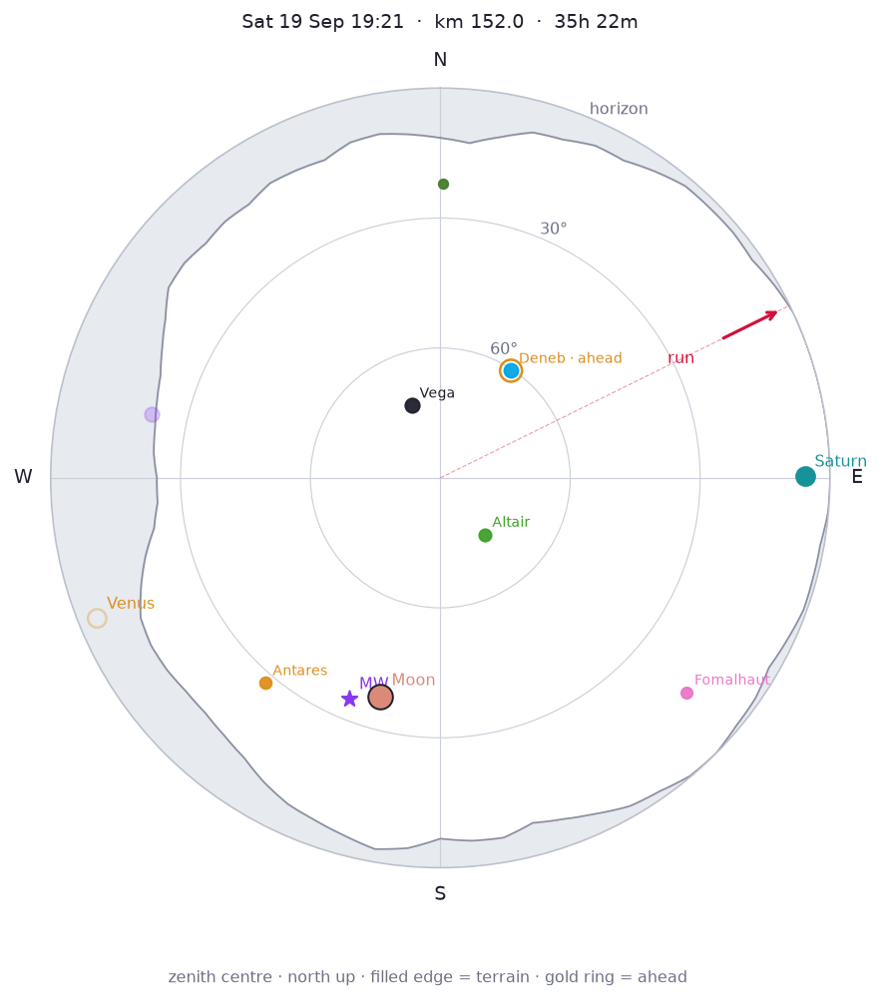

Moon first quarter, 56% lit, 38° S (195°). Bright enough to wash out the Milky Way and faint constellations.
Milky Way centre 35° S (202°).
Planets
- Venus: 5° W (248°), mag -4.8 — behind terrain
- Saturn: 5° E (90°), mag 0.4 — behind terrain
Constellations
- Overhead: Aquila, Cygnus, Lyra, Ophiuchus
- Up: Aquarius, Capricornus, Cassiopeia, Cepheus, Corona Borealis, Draco, Pegasus, Sagittarius, Scorpius, Serpens
- Rising: Andromeda, Grus, Pavo, Piscis Austrinus, Ursa Minor
- Setting: Boötes, Ursa Major
Bright stars
- Arcturus (Boötes): 22° W (282°), mag -0.1
- Vega (Lyra): 72° N (339°), mag 0.0
- Altair (Aquila): 73° SE (141°), mag 0.8
- Antares (Scorpius): 28° SW (220°), mag 1.0
- Fomalhaut (Piscis Austrinus): 14° SE (131°), mag 1.2
- Deneb (Cygnus): 60° NE (34°), mag 1.2
- Polaris (Ursa Minor): 22° N (1°), mag 2.0
Sat 19 Sep 20:44 · elapsed 36h 45m · km 120.0 · 2188 m
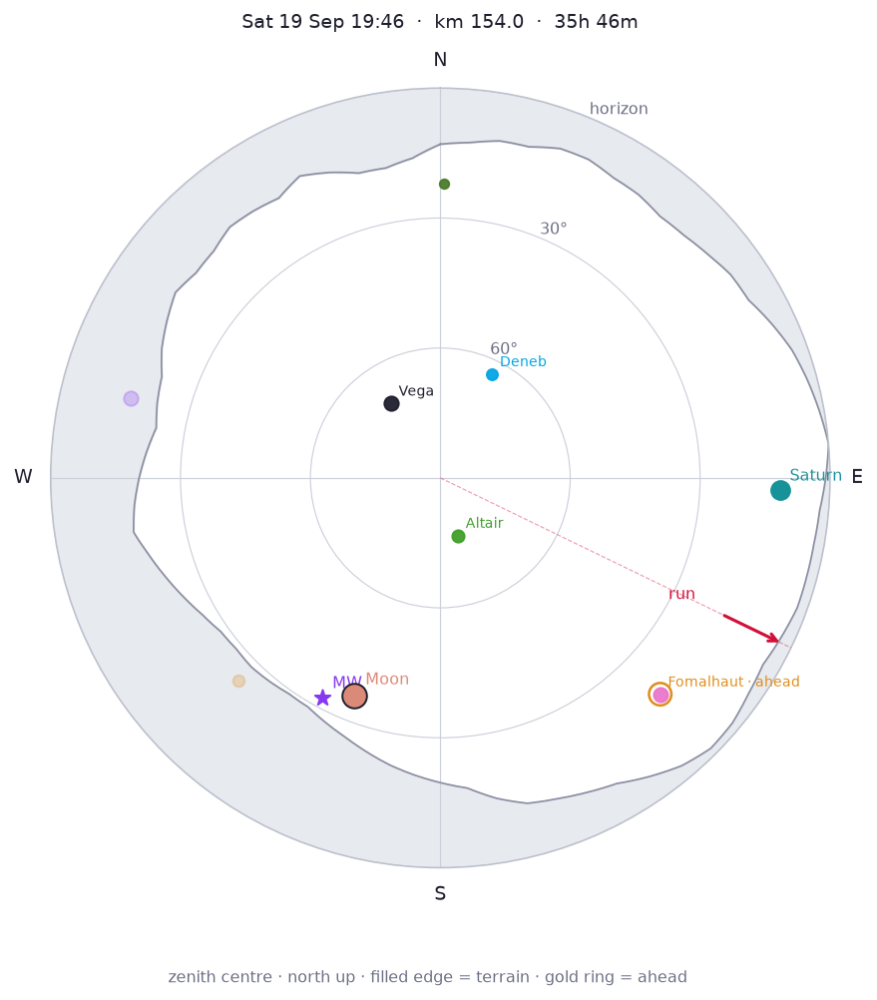
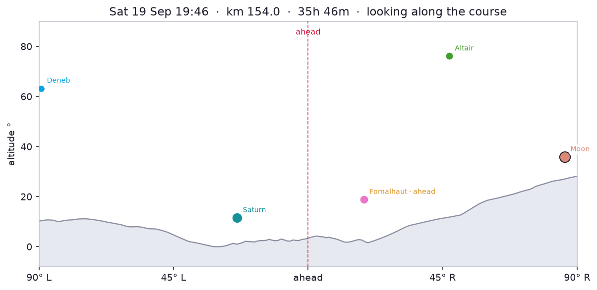
Moon first quarter, 57% lit, 30° SW (215°). Bright enough to wash out the Milky Way and faint constellations.
Milky Way centre 25° SW (220°).
Planets
- Saturn: 25° E (98°), mag 0.4
Constellations
- Overhead: Aquila, Cygnus, Lyra, Pegasus
- Up: Andromeda, Aquarius, Capricornus, Cassiopeia, Cepheus, Draco, Ophiuchus, Piscis Austrinus, Sagittarius
- Rising: Aries, Cetus, Grus, Perseus, Pisces, Ursa Minor
- Setting: Corona Borealis, Pavo, Scorpius, Serpens
Bright stars
- Vega (Lyra): 60° NW (310°), mag 0.0
- Altair (Aquila): 73° SW (218°), mag 0.8
- Antares (Scorpius): 14° SW (233°), mag 1.0
- Fomalhaut (Piscis Austrinus): 27° SE (144°), mag 1.2
- Deneb (Cygnus): 67° N (4°), mag 1.2
- Polaris (Ursa Minor): 22° N (1°), mag 2.0
Sat 19 Sep 21:23 · elapsed 37h 24m · km 122.0 · 2148 m
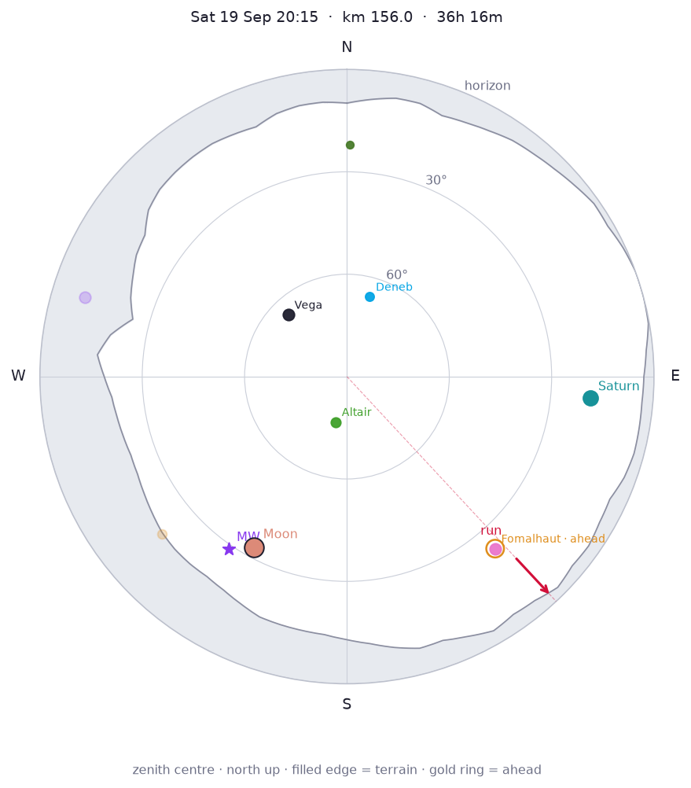
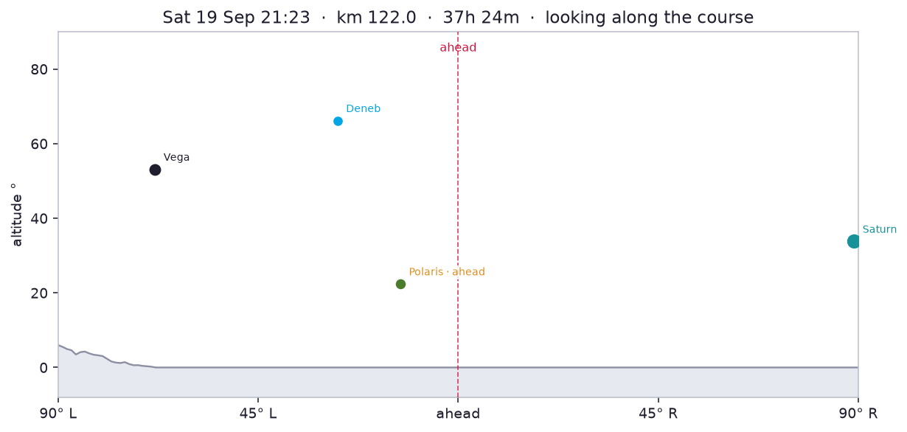
Moon first quarter, 57% lit, 24° SW (222°). Bright enough to wash out the Milky Way and faint constellations.
Milky Way centre 19° SW (226°).
Planets
- Saturn: 34° E (103°), mag 0.4
Constellations
- Overhead: Aquarius, Aquila, Cygnus, Pegasus
- Up: Andromeda, Capricornus, Cassiopeia, Cepheus, Draco, Lyra, Ophiuchus, Piscis Austrinus, Sagittarius
- Rising: Aries, Cetus, Grus, Perseus, Phoenix, Pisces, Ursa Minor
- Setting: Corona Borealis, Pavo, Scorpius, Serpens
Bright stars
- Vega (Lyra): 53° NW (305°), mag 0.0
- Altair (Aquila): 66° SW (239°), mag 0.8
- Antares (Scorpius): 6° SW (238°), mag 1.0
- Fomalhaut (Piscis Austrinus): 32° SE (153°), mag 1.2
- Deneb (Cygnus): 66° N (347°), mag 1.2
- Polaris (Ursa Minor): 22° N (1°), mag 2.0
Sat 19 Sep 22:03 · elapsed 38h 03m · km 124.0 · 1603 m
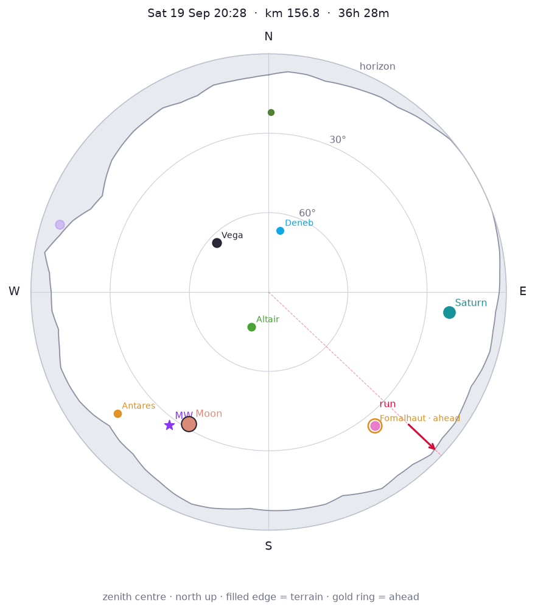
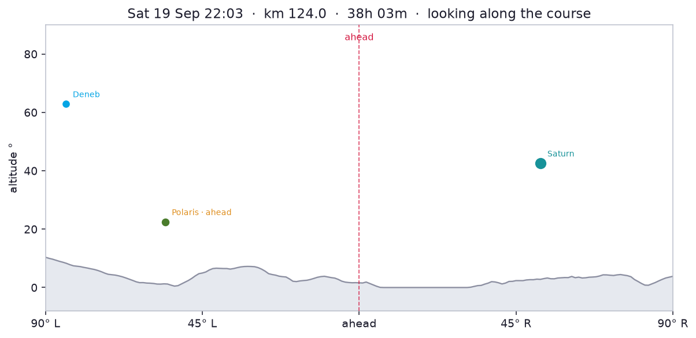
Moon first quarter, 57% lit, below the terrain horizon.
Milky Way centre is below the local horizon.
Planets
- Saturn: 43° E (108°), mag 0.4
Constellations
- Overhead: Aquarius, Cygnus, Pegasus
- Up: Andromeda, Aquila, Aries, Capricornus, Cassiopeia, Cepheus, Cetus, Draco, Lyra, Ophiuchus, Pisces, Piscis Austrinus, Sagittarius
- Rising: Grus, Perseus, Phoenix, Ursa Minor
Bright stars
- Vega (Lyra): 46° NW (303°), mag 0.0
- Altair (Aquila): 58° W (250°), mag 0.8
- Fomalhaut (Piscis Austrinus): 36° S (162°), mag 1.2
- Deneb (Cygnus): 63° NW (332°), mag 1.2
- Polaris (Ursa Minor): 23° N (1°), mag 2.0
Sat 19 Sep 23:21 · elapsed 39h 22m · km 128.0 · 1313 m
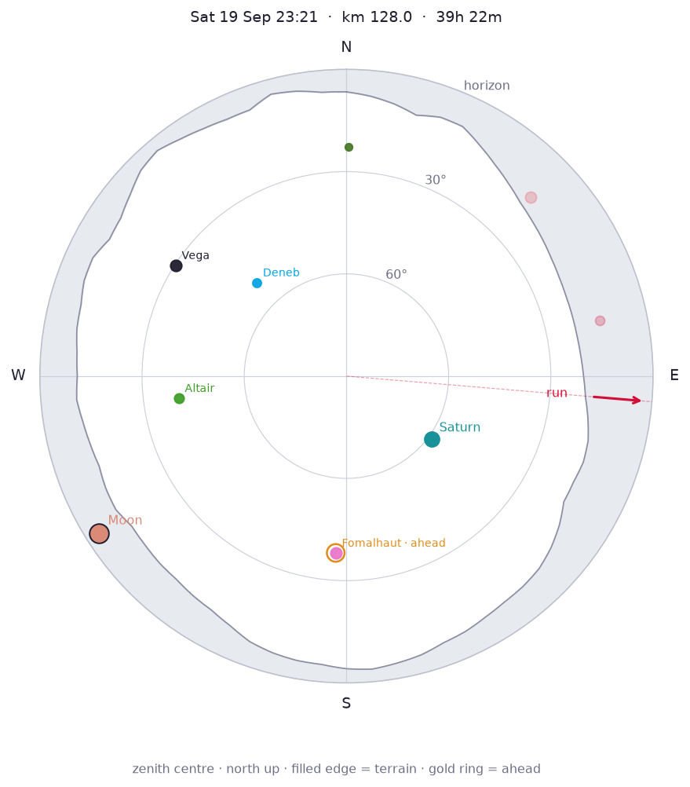
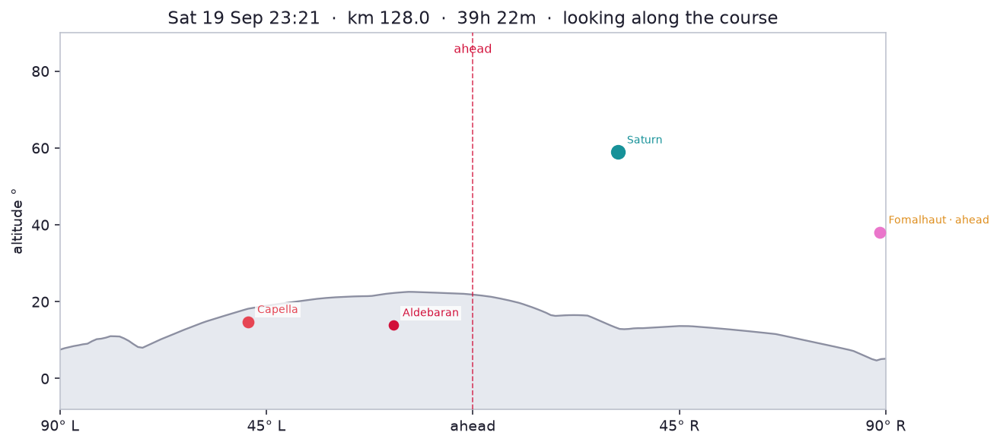
Moon first quarter, 58% lit, below the terrain horizon.
Milky Way centre is below the local horizon.
Planets
- Saturn: 59° SE (126°), mag 0.4
Constellations
- Overhead: Andromeda, Pegasus
- Up: Aquarius, Aquila, Aries, Capricornus, Cassiopeia, Cepheus, Cetus, Cygnus, Lyra, Perseus, Pisces, Piscis Austrinus
- Rising: Phoenix, Ursa Minor
- Setting: Draco, Grus
Bright stars
- Vega (Lyra): 30° NW (303°), mag 0.0
- Altair (Aquila): 40° W (263°), mag 0.8
- Fomalhaut (Piscis Austrinus): 38° S (183°), mag 1.2
- Deneb (Cygnus): 52° NW (316°), mag 1.2
- Polaris (Ursa Minor): 23° N (1°), mag 2.0
Sun 20 Sep 00:01 · elapsed 40h 01m · km 130.0 · 1466 m

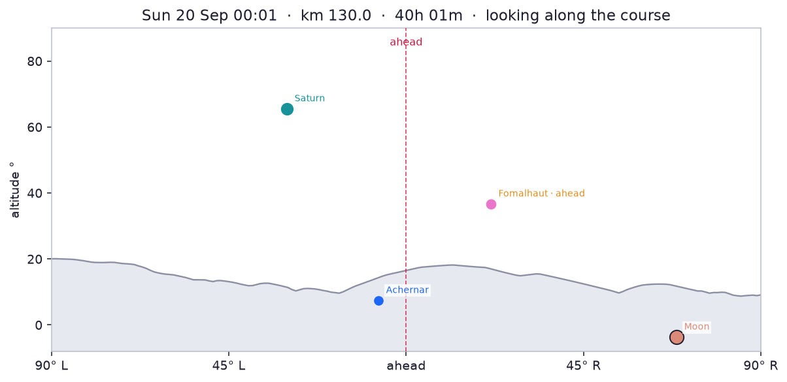
Moon first quarter, 58% lit, below the terrain horizon.
Milky Way centre is below the local horizon.
Planets
- Saturn: 65° SE (142°), mag 0.4
Constellations
- Overhead: Andromeda, Pegasus
- Up: Aquarius, Aquila, Aries, Capricornus, Cassiopeia, Cepheus, Cetus, Cygnus, Perseus, Pisces, Piscis Austrinus
- Rising: Auriga, Phoenix, Taurus, Ursa Minor
- Setting: Draco, Lyra
Bright stars
- Vega (Lyra): 23° NW (304°), mag 0.0
- Capella (Auriga): 21° NE (48°), mag 0.1
- Altair (Aquila): 31° W (267°), mag 0.8
- Aldebaran (Taurus): 23° E (81°), mag 0.8
- Fomalhaut (Piscis Austrinus): 37° S (194°), mag 1.2
- Deneb (Cygnus): 45° NW (313°), mag 1.2
- Polaris (Ursa Minor): 23° N (1°), mag 2.0
Sun 20 Sep 01:20 · elapsed 41h 20m · km 134.0 · 1234 m
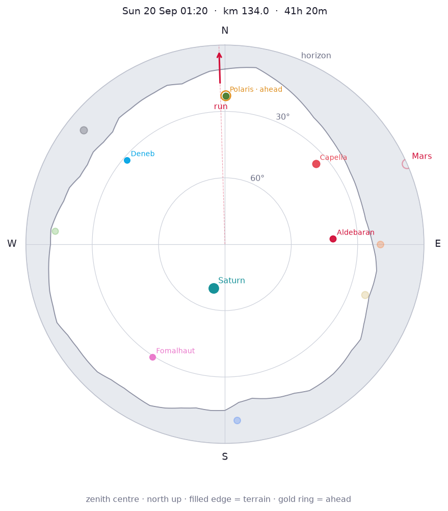
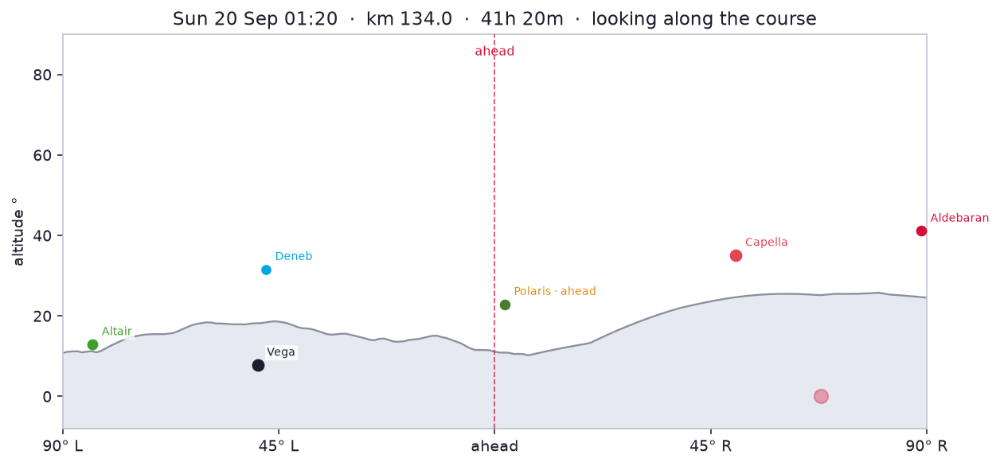
Moon first quarter, 59% lit, below the terrain horizon.
Milky Way centre is below the local horizon.
Planets
- Mars: 0° NE (66°), mag 1.2 — behind terrain
- Saturn: 69° S (195°), mag 0.4
Constellations
- Overhead: Andromeda, Aries, Pegasus, Pisces
- Up: Aquarius, Auriga, Capricornus, Cassiopeia, Cepheus, Cetus, Cygnus, Orion, Perseus, Piscis Austrinus, Taurus
- Rising: Ursa Minor
- Setting: Phoenix
Bright stars
- Capella (Auriga): 35° NE (49°), mag 0.1
- Aldebaran (Taurus): 41° E (87°), mag 0.8
- Fomalhaut (Piscis Austrinus): 29° SW (213°), mag 1.2
- Deneb (Cygnus): 32° NW (311°), mag 1.2
- Polaris (Ursa Minor): 23° N (0°), mag 2.0
Sun 20 Sep 02:00 · elapsed 42h 00m · km 136.0 · 1532 m
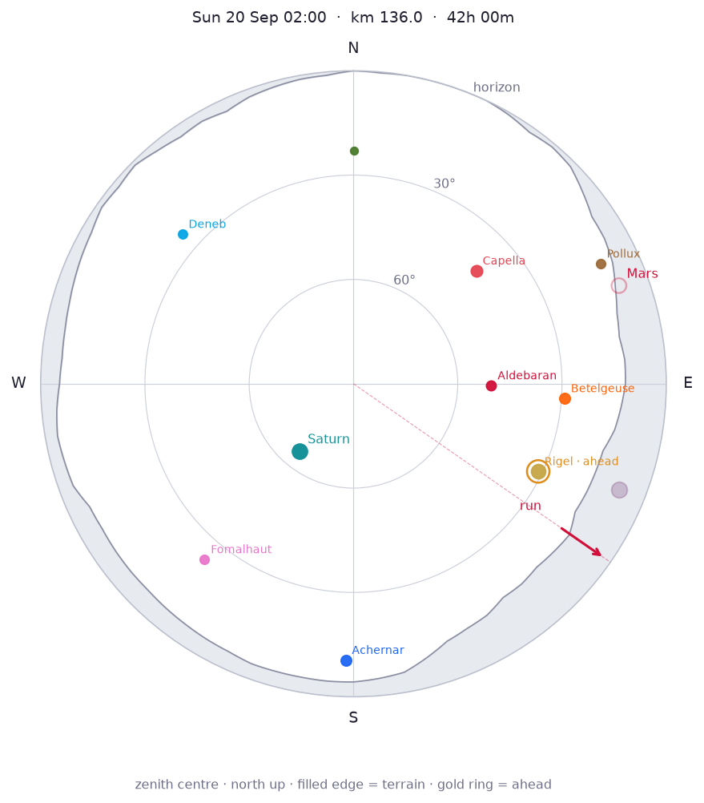
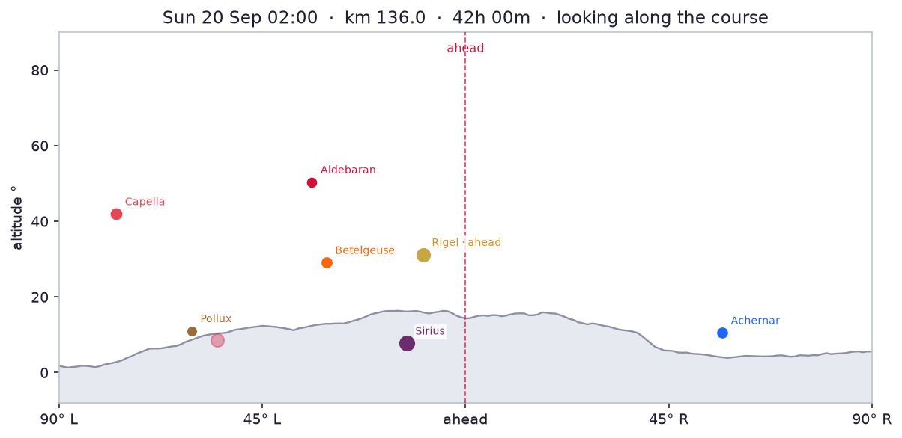
Moon first quarter, 59% lit, below the terrain horizon.
Milky Way centre is below the local horizon.
Planets
- Mars: 9° E (70°), mag 1.2 — behind terrain
- Saturn: 65° SW (218°), mag 0.4
Constellations
- Overhead: Andromeda, Aries, Cetus, Pegasus, Perseus, Pisces
- Up: Auriga, Cassiopeia, Cepheus, Orion, Taurus
- Rising: Gemini, Lepus, Ursa Minor
- Setting: Aquarius, Capricornus, Cygnus, Eridanus, Phoenix, Piscis Austrinus
Bright stars
- Capella (Auriga): 42° NE (47°), mag 0.1
- Rigel (Orion): 31° SE (115°), mag 0.1
- Betelgeuse (Orion): 29° E (94°), mag 0.4
- Achernar (Eridanus): 11° S (182°), mag 0.5
- Aldebaran (Taurus): 50° E (91°), mag 0.8
- Pollux (Gemini): 11° NE (64°), mag 1.1
- Fomalhaut (Piscis Austrinus): 24° SW (220°), mag 1.2
- Deneb (Cygnus): 25° NW (311°), mag 1.2
- Polaris (Ursa Minor): 23° N (0°), mag 2.0
Sun 20 Sep 02:39 · elapsed 42h 40m · km 138.0 · 1651 m
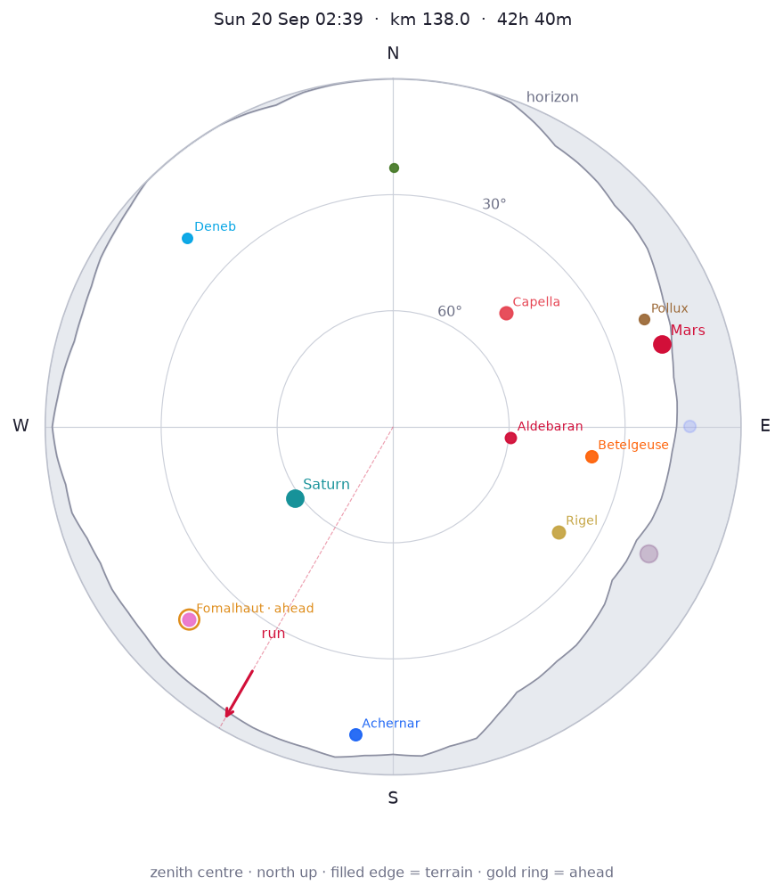
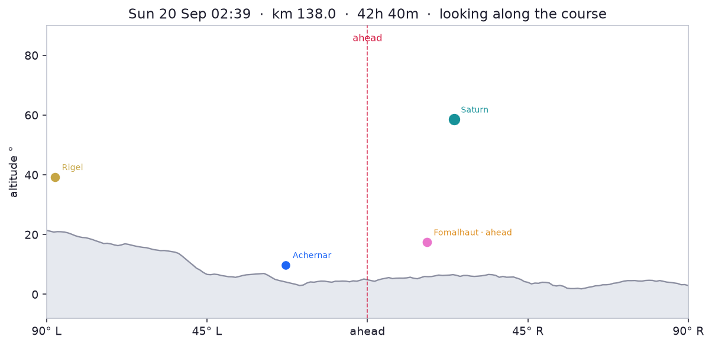
Moon first quarter, 59% lit, below the terrain horizon.
Milky Way centre is below the local horizon.
Planets
- Mars: 17° E (73°), mag 1.2
- Saturn: 59° SW (234°), mag 0.4
Constellations
- Overhead: Aries, Cetus, Perseus, Pisces
- Up: Andromeda, Auriga, Cassiopeia, Cepheus, Lepus, Orion, Pegasus, Taurus
- Rising: Gemini, Ursa Minor
- Setting: Aquarius, Capricornus, Cygnus, Eridanus, Phoenix, Piscis Austrinus
Bright stars
- Capella (Auriga): 49° NE (45°), mag 0.1
- Rigel (Orion): 39° SE (122°), mag 0.1
- Betelgeuse (Orion): 38° E (98°), mag 0.4
- Achernar (Eridanus): 10° S (187°), mag 0.5
- Aldebaran (Taurus): 60° E (95°), mag 0.8
- Pollux (Gemini): 19° NE (67°), mag 1.1
- Fomalhaut (Piscis Austrinus): 17° SW (227°), mag 1.2
- Deneb (Cygnus): 18° NW (313°), mag 1.2
- Polaris (Ursa Minor): 23° N (0°), mag 2.0
Sun 20 Sep 03:59 · elapsed 43h 59m · km 142.0 · 1669 m
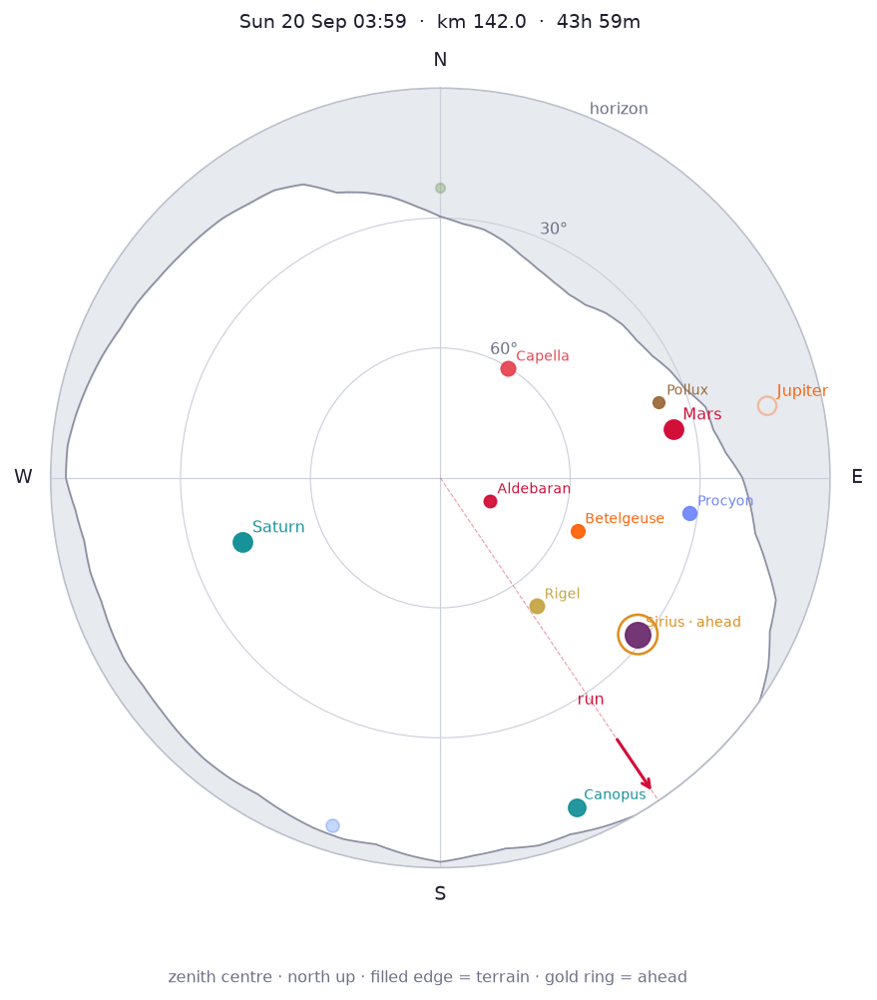
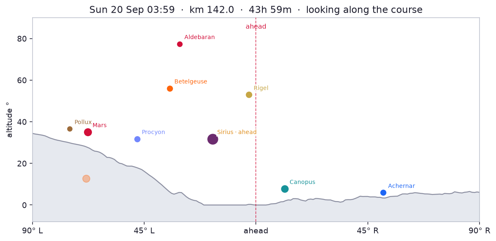
Moon first quarter, 60% lit, below the terrain horizon.
Milky Way centre is below the local horizon.
Planets
- Mars: 35° E (78°), mag 1.2
- Jupiter: 13° E (78°), mag -1.8 — behind terrain
- Saturn: 42° W (252°), mag 0.4
Constellations
- Overhead: Aries, Auriga, Cetus, Orion, Perseus, Taurus
- Up: Andromeda, Canis Major, Canis Minor, Cassiopeia, Columba, Gemini, Lepus, Pegasus, Pisces
- Rising: Carina, Puppis
- Setting: Phoenix
Bright stars
- Sirius (Canis Major): 32° SE (128°), mag -1.5
- Canopus (Carina): 8° S (158°), mag -0.7
- Capella (Auriga): 60° NE (32°), mag 0.1
- Rigel (Orion): 53° SE (143°), mag 0.1
- Procyon (Canis Minor): 32° E (98°), mag 0.3
- Betelgeuse (Orion): 56° E (111°), mag 0.4
- Aldebaran (Taurus): 77° SE (115°), mag 0.8
- Pollux (Gemini): 37° E (71°), mag 1.1
Sun 20 Sep 04:37 · elapsed 44h 38m · km 144.0 · 1442 m

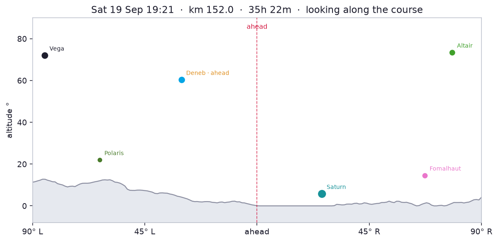
Moon first quarter, 60% lit, below the terrain horizon.
Milky Way centre is below the local horizon.
Planets
- Mars: 44° E (80°), mag 1.2
- Jupiter: 21° E (81°), mag -1.8 — behind terrain
- Saturn: 33° W (258°), mag 0.4
Constellations
- Overhead: Auriga, Cetus, Orion, Perseus, Taurus
- Up: Andromeda, Aries, Canis Major, Canis Minor, Cassiopeia, Columba, Gemini, Lepus, Pegasus, Pisces
- Rising: Carina, Puppis
Bright stars
- Sirius (Canis Major): 38° SE (136°), mag -1.5
- Canopus (Carina): 11° S (163°), mag -0.7
- Capella (Auriga): 64° N (20°), mag 0.1
- Rigel (Orion): 57° S (158°), mag 0.1
- Procyon (Canis Minor): 41° E (103°), mag 0.3
- Betelgeuse (Orion): 64° SE (122°), mag 0.4
- Aldebaran (Taurus): 84° S (160°), mag 0.8
- Pollux (Gemini): 45° E (72°), mag 1.1